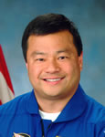

Lyndon B. Johnson Space Center
Houston, Texas 77058
|
National Aeronautics and Space Administration Lyndon B. Johnson Space Center Houston, Texas 77058 |
 |
Biographical Data |
||
Leroy Chiao (Ph.D.)
NASA Astronaut (FORMER)
PERSONAL DATA: Born August 28, 1960, Dr. Chiao grew up in Danville, California. He enjoys flying his Grumman Tiger aircraft, as well as downhill skiing. He speaks Mandarin Chinese and Russian. Leroy and Karen Chiao married in 2003.
EDUCATION: Graduated from Monte Vista High School, Danville, California, in 1978; received a Bachelor of Science degree in Chemical Engineering from the University of California, Berkeley, in 1983, and a Master of Science degree and a Doctorate in Chemical Engineering from the University of California, Santa Barbara, in 1985 and 1987.
SPECIAL HONORS: Recipient of four NASA Space Flight Medals (2005, 2000, 1996, 1994), and numerous awards, including the NASA Distinguished Service Medal (2005), two NASA Exceptional Service Awards (2000, 1996), four NASA Individual Achievement Awards (2004, 2003, 2002, 2001), two NASA Group Achievement awards (1997, 1995) and the NASA Going the Extra Mile Award (2004). Recipient of numerous Federation Aeronautique Internationale awards, including the Korolev Diploma (2002), Komarov Diploma (1996) and De La Vaulx Medal (1994). Recipient of Distinguished Alumni Award from the University of California, Santa Barbara (1995). Recipient of two Phi Kappa Tau awards - the Taylor A. Borradaile National Alumnus of the Year Award (1996) and the Nu Chapter Alumnus of the Year (1991) award. Recipient of the 2005 Science and Technology Asian Pacific American Heritage Association Award. Recipient of the 2003 Excellence Award in Science and Technology, from the US Pan Asian American Chamber of Commerce. Recipient of the 100 Most Influential Asian Americans in the 1990’s Award from A-Magazine (2000). Keynote Commencement Speaker for the Departments of Engineering at the University of California at Berkeley, and at Santa Barbara (1996). Invited lecturer on honeycomb material and bonded panels, and cure modeling of aerospace composite materials, at the Beijing Institute of Aeronautical Materials, and at the Changsha Institute of Technology, 5th Department, in the Peoples Republic of China (1988). Invited contributor to the International Encyclopedia of Composite Materials (1989).
EXPERIENCE: Dr. Chiao graduated in 1987 from the University of California at Santa Barbara, and joined the Hexcel Corporation in Dublin, California. He worked for Hexcel until 1989, during which time he was involved in process, manufacturing, and engineering research on advanced aerospace materials. He worked on a joint NASA-JPL/Hexcel project to develop an optically correct, polymer composite precision segment reflector, for future space telescopes. He also worked on cure modeling and finite element analysis. In January of 1989 Dr. Chiao joined the Lawrence Livermore National Laboratory in Livermore, California, where he was involved in processing research for fabrication of filament-wound and thick-section aerospace composites, where he developed and demonstrated a mechanistic cure model for graphite fiber/epoxy composite material. An instrument-rated pilot, Dr. Chiao has logged over 2600 flight hours in a variety of aircraft.
NASA EXPERIENCE: Selected by NASA in January 1990, Dr. Chiao became an Astronaut in July 1991. He is qualified for flight assignment as a Space Station Commander, Space Station Science Officer and as a Space Shuttle Mission Specialist. His technical assignments to date include: Space Shuttle flight software verification in the Shuttle Avionics Integration Laboratory (SAIL); Crew Equipment, Spacelab, Spacehab and Payloads issues for the Astronaut Office Mission Development Branch; Training and Flight Data File issues; EVA issues for the EVA Branch. Dr. Chiao also served as Chief of the Astronaut Office EVA Branch. A veteran of four space flights, he flew as a Mission Specialist on STS-65 (July 8-23, 1994), STS-72 (January 11-20, 1996) and STS-92 (October 11-24, 2000), and was the Commander and NASA Science Officer on Expedition-10 (October 13 to April 24, 2005). Dr. Chiao has logged a total of 229 days, 7 hours, 38 minutes and 5 seconds in space, including 36 hours and 7 minutes of EVA time in six space walks. In December 2005, Dr. Chiao retired from NASA to pursue private interests.
SPACE FLIGHT EXPERIENCE: STS-65 Columbia (July 8-23, 1994) launched from and returned to land at the Kennedy Space Center, Florida, setting a Federation Aeronautique Internationale flight duration record for P2 spacecraft. The STS-65 mission flew the second International Microgravity Laboratory (IML-2). During the 15-day flight the seven-member crew conducted more than 80 experiments focusing on materials and life sciences research in microgravity. The STS-65 mission was accomplished in 236 orbits of the Earth, traveling 6.1 million miles in 353 hours and 55 minutes. On this mission, Dr. Chiao became the 196th NASA Astronaut to fly in space and the 311th human in space.
STS-72 Endeavour (January 11-20, 1996) was a 9-day mission during which the crew retrieved the Space Flyer Unit (launched from Japan 10-months earlier), and deployed and retrieved the OAST-Flyer. Dr. Chiao performed two spacewalks designed to demonstrate tools and hardware, and evaluate techniques to be used in the assembly of the International Space Station. In completing this mission, Dr. Chiao logged a total of 214 hours and 41 seconds in space, including 12 hours and 57 minutes EVA time, and traveled 3.7 million miles in 142 orbits of the Earth. During this flight, Dr. Chiao became the first Asian-American and ethnic Chinese to perform a spacewalk.
STS-92 Discovery (October 11-24, 2000) was launched from the Kennedy Space Center, Florida and returned to land at Edwards Air Force Base, California. During the 13-day flight, the seven-member crew attached the Z1 Truss and Pressurized Mating Adapter 3 to the International Space Station (ISS) using Discovery’s robotic arm and performed four space walks to configure these elements. This expansion of the ISS opened the door for future assembly missions and prepared the station for its first resident crew. Dr. Chiao was the EVA/Construction Lead for this mission and totaled 13 hours and 16 minutes of EVA time in two space walks. The STS-92 mission was accomplished in 202 orbits, traveling 5.3 million miles in 12 days, 21 hours, 40 minutes and 25 seconds.
Expedition-10 (October 13, 2004 to April 24, 2005). Dr. Chiao was the Commander and NASA Science Officer of the 10th mission to the International Space Station. Expedition-10 launched from the Baikonur Cosmodrome in Kazakhstan on October 13, 2004 aboard Soyuz TMA-5 and docked with the ISS on October 15, 2004. During his six and a half month stay aboard the station, Dr. Chiao performed numerous tasks including 20 science experiments and two repair and installation space walks, using the Russian “Orlan” space suit, totaling 9 hours, 56 minutes of EVA time on this flight. Expedition-10 concluded its successful mission on April 24, 2005 with a safe landing in Kazakhstan. With this mission, Dr. Chiao became the first Asian-American and ethnic Chinese Mission Commander.
DECEMBER 2005